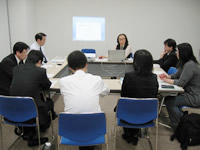

| ■議 題 |
| １．埼玉新聞「生協特集」(見開き２ページ)について |
| |
３月中旬「環境」をテーマに掲載を予定。今年は洞爺湖サミットもあり、日本生協連も６月～８月にかけて「コープ地球温暖化防止1000万人のくらしの見直しキャンペーン」の取り組みを提起。各生協の活動・事業・社会貢献活動・行政の呼びかけに連動した取り組みなどを切り口に掲載したいと考えている。
＜ご協力のお願い＞①情報提供 ②写真提供 ③紙面校正(２月末頃予定) |
| ２．学習会 |
| |
｢生協のホームページの役割と期待されるもの～生協の顔であり重要な広報ツール｣
講師 中野 邦夫氏（ウェブサイトづくりコンサルタント） |
| ＜概 要＞ |
| |
 ホームページ(以下：ＨＰ)は広い意味での広報であると共に、重要な「情報開示の場」である。企業や行政・司法においても社会とつなぐ重要なツールとして認知されている。日本の上場企業99.8％はＨＰを持ち、ＨＰそのものが「顔」になっている。
る人が「生協」について何を知りたいか。見た人の質問に答えているか。生協が行っている事が見えるようにする。ＨＰに何を求めるかは千差万別。逆に言うと、こういう情報が自分のところにはあるというのがわかるのが良いデザイン。更新頻度は高ければ高いほど良く、更新情報は古い順ではなく新しい順に並べる。分かりやすく情報を掲載し、だれが見ても「いつ、だれが、何を、どこで、何した」が分かり、何を訴えたいのかがわかる記事に。ＨＰを見てもらうためには、検索してもらえるものを見出しに「キーワード」として盛り込むとよい。
|